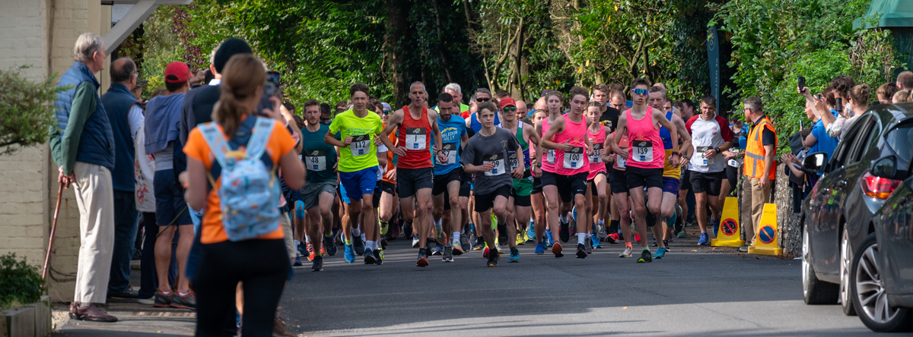

Saturday 19 September 2026 · Hambledon Vineyard
Run for the hills.
Eat and drink at the Vineyard.
A scenic trail run through England's oldest commercial vineyard, followed by an afternoon of food and drink at race HQ. Choose your distance — from a 1k or 2k family fun run to the 5k, 10k or self-navigated Trail 20k — and join us for a brilliant day out.
Welcome back to the Vineyard
The Hambledon Hilly returns to the stunning Hambledon Vineyard, England's oldest commercial vineyard, on 19 September 2026. Join us for a day of scenic running, and superb food and drink in this beautiful part of the world.
At race HQ within the Hambledon Wine Estate, the vineyard team will be serving high-quality food and beverages, including its award-winning sparkling wine. We're hoping that runners, families, volunteers and supporters will stay with us right through into the afternoon to enjoy the event and help us raise money for Brain Tumour Research and Hambledon Primary School.
The main vineyard visitors centre will also be open on the day for tours, tasting and dining. Bookings should be made well in advance at hambledonvineyard.co.uk.
Choose Your Route
All races start and finish at race HQ within the vineyard estate. Pick a distance to see the course, start time and entry fee. Full course descriptions and race-day details are on the Race Info page.
On the Day
Stick around at race HQ and make an afternoon of it. The vineyard team will be serving food and drink — including their award-winning sparkling wine — right through the afternoon, with plenty to enjoy for runners, families, volunteers and supporters alike.
- Food and drink from the Hambledon Vineyard team
- Award-winning sparkling wine, tastings and tours
- A finish-line atmosphere for the whole family
- All proceeds help Brain Tumour Research and Hambledon Primary School
Fancy making a day of it? Book a vineyard tour, tasting or table well in advance at hambledonvineyard.co.uk.
With Thanks to Our Sponsors
The Hambledon Hilly wouldn't be possible without the generous support of our sponsors.

Getting There
Race HQ is based at Hambledon Vineyard, PO7 4RY (what3words: rezoning.pulsing.swift), home to England's oldest commercial vineyard, in the heart of the Hampshire countryside. Race HQ itself is in the big white marquee behind the Vineyard Restaurant.
Parking is available on the estate and marshals will direct you on arrival.
Visit Hambledon Vineyard